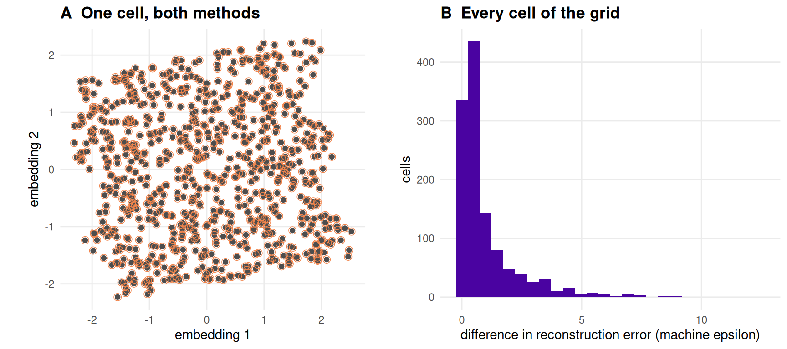
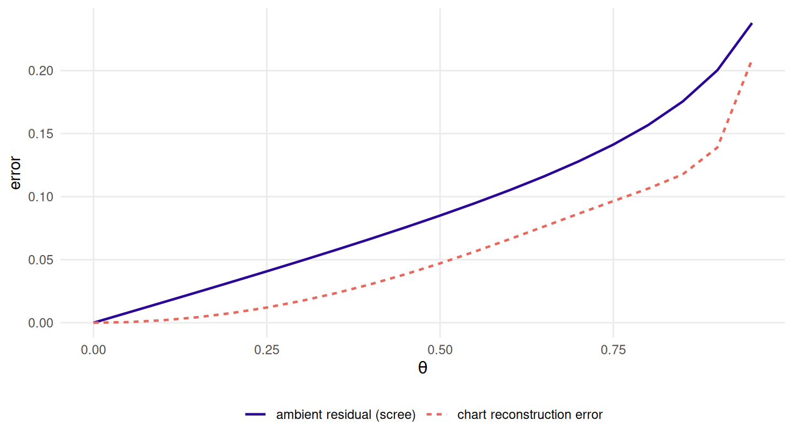

4 Linear projections and where they break
R. Heller · Date: 2026-07-29 · Last changed: 2026-09-07
When is a projection just a shadow?
4.1 What this chapter answers
A linear method asks one question: which flat slice of the ambient space keeps most of the cloud? On a folded sheet the answer is a shadow. The sheet is intrinsically two-dimensional, so an exact two-dimensional answer exists — Chapter 2 writes it down in closed form — but folding puts it out of a projection’s reach, because unfolding is not a linear map. This chapter measures how far out of reach, and establishes three things the rest of the book runs on.
The reading convention. Every chapter from here on opens by reading a
committed artefact together with the digest it was written against — that is
read_run(), and this is the chapter that explains what it refuses.
The baseline. PCA’s reconstruction-error curve over \(\theta\) is the reference every later method is judged against. It is not a straw man: PCA is exact on the flat sheet, and on this grid it is the best method of all until the fold is deep enough for Isomap to overtake it — which happens later than the ordering in Chapter 10 might suggest, and later still on \(Q_{NX}\) than on reconstruction error. Chapter 5 locates both crossings.
The coincidence. PCA and classical MDS are not two methods. The registry keeps both because showing that they coincide is worth a figure, and Chapter 10 must not report them as two results.
None of this argues against linear projection. Linear methods are the honest baseline here precisely because they cannot represent a fold and say so plainly, rather than returning a picture with structure the data do not have.
4.2 Setup
grid <- read_run("data/processed/benchmark-grid.rds", "2483a468d82d4d64")
lin <- subset(grid, method %in% c("pca", "mds"))
p <- miura_ori(nx = 6L, ny = 6L, alpha = pi / 3)read_run() reads a committed .rds and refuses three things. An artefact with
no provenance cannot be traced to the code that produced it, so no number may
be reported from it. One written by a --quick run is a smoke test at
N_QUICK points, not the book’s evidence. And one whose digest is not the
digest named here is not the run these sentences were read off — the chunks would
re-run, the figures would redraw, and the prose around them would quietly keep
the old values.
The digest is taken with the provenance block stripped. Provenance carries a commit, a timestamp and an elapsed time, so hashing it would fire the check on every regeneration, and a check that always fires is one that gets deleted. What is hashed is the answer.
# The third refusal. The message hands over the digest it found, so recording a
# new one is easier than not recording it.
read_run("data/processed/benchmark-grid.rds", "0000000000000000")
#> Error: data/processed/benchmark-grid.rds is not the run this chapter was
#> written against.
#> expected digest: 0000000000000000
#> found: 2483a468d82d4d644.3 Background
4.3.1 The projection
PCA is the least-squares fit of a \(d\)-dimensional affine subspace to a cloud of
points (17), and equivalently the rotation onto the directions of
greatest variance (21). Both descriptions are one singular
value decomposition, and Eckart–Young (18) says the
truncated decomposition is optimal among approximations of that rank rather
than merely good. That matters twice below: it is why PCA is the strongest thing
a linear method can be, and it is what metric_floor() is built from.
embed_pca() computes it with prcomp(), an SVD of the centred data matrix. The
plan this book was written from preferred that route to princomp()’s
eigendecomposition of the covariance on accuracy grounds. The argument does not
reproduce here and is not made: lin-core compares the two and they agree to the
last representable place. prcomp() is a convention, not a result.
4.3.2 The distance version
Classical multidimensional scaling (22) starts from a matrix of
distances, double-centres their squares, and takes the leading eigenvectors. It
is not Kruskal’s multidimensional scaling (23), which minimises a
stress functional numerically; the classical version is a closed-form
eigenproblem, and embed_mds() is cmdscale() on the ambient distances.
For Euclidean distances the double-centred matrix of squares is the Gram matrix of the centred coordinates, whose eigenvectors are the principal directions. So classical MDS on Euclidean distances is PCA — a textbook identity (12). What the next section adds is a measurement of it: “provably identical” and “identical in this implementation, at this tolerance, on this data” are different claims, and only the second can be checked.
4.3.3 What is being scored
reconstruction_error() is the normalised full Procrustes RMSE. It quotients out
translation, rotation, reflection and one isotropic scale (24)
and nothing else, so zero means the embedding is the chart up to a similarity and
one means it explains none of the chart’s variance at all.
metric_floor() says when zero is even available: it is the tail of the chart’s
own eigenvalue spectrum, the Eckart–Young residual of forcing a chart of
intrinsic dimension \(p\) into \(d < p\). Here chart and target are both
two-dimensional, so the floor column of this grid is zero in every one of its
rows. Nothing below is loss the problem imposes; all of it belongs to the method.
4.4 A shadow, and two names for it
4.4.1 Exact on the flat sheet
thetas <- THETA_COARSE[c(1L, 3L, 5L)]
samp <- lapply(thetas, function(t)
sample_manifold(p, theta = t, n = N_DEFAULT, seed = BENCH_SEEDS[1]))
Y <- lapply(samp, function(s) embed("pca", s))embed() takes the sample object, not a matrix. A method may consume the ambient
cloud, a neighbourhood graph built from it, or geodesics, and the registry
records which; handing it a bare matrix would throw away the distinction the
whole benchmark is about.
err0 <- reconstruction_error(Y[[1]], samp[[1]]$truth)
floor0 <- metric_floor(samp[[1]])
flat_cells <- subset(grid, method == "pca" & theta == 0 & noise == "none")
sv <- vapply(samp, function(s) prcomp(s$X)$sdev, numeric(3))
thick <- sv[3, ] / sv[1, ] # the corrugation, relative to the sheet
aspect <- sv[2, ] / sv[1, ] # of the two directions PCA keeps
u <- svd(scale(samp[[1]]$truth, scale = FALSE))$d
chart_aspect <- u[2] / u[1] # of the chart, which folding never touchesAt \(\theta = 0\) the sheet lies in a plane, PCA finds that plane, and the recovery is exact. On this sample the error is 2.2e-16 against a floor of 0, and over the whole clean flat row of the committed grid — 20 seeds — the worst is 1.4e-15, with \(Q_{NX}\) exactly 1. That is not a good score. It is floating-point rounding on a problem whose answer is a rigid motion.
It is worth pausing on how unusual that is. At \(\theta = 0\) PCA and classical MDS are the only methods on this grid that recover the chart exactly; every method in Chapters 5 and 6 posts a visible error on a sheet that has not been folded at all.
![Three panels side by side, each a scatter of embedded points coloured along a purple-to-yellow ramp by one exact chart coordinate, with five thin dark level-set paths drawn over them. In the leftmost, at fold angle zero, the colour runs in straight vertical bands and the five paths are straight, evenly spaced and parallel. The middle panel at half the sweep looks much the same. In the rightmost, at the largest fold angle, the whole patch is smaller in both directions and the paths have bowed outwards into curves; they remain ordered and never cross.](04-linear-projections_files/figure-html/lin-shadow-1.png)
Figure 4.1: The two-component PCA of the same sheet at three fold angles, coloured by the exact chart coordinate along the corrugation. The grey paths are level sets of that coordinate: an embedding that recovered the chart draws them nested and non-crossing, and one that folded the chart back onto itself draws two of them on top of each other.
Figure 4.1 is the chapter’s title in three panels. The left panel is the chart, recovered. The right panel is a shadow: the sheet has contracted along its corrugation and the projection has contracted with it, because a projection is the one thing that cannot put back a direction the data no longer extend into. Read the grey level sets rather than the colour. They stay ordered and never cross — PCA does not tear the chart or fold it back on itself — but they bow, and a bowed chart is a distortion no similarity transform can undo.
4.4.2 What the projection discards
Folding lifts the sheet out of its plane, and the projection’s difficulty is that the lift is real. The third principal direction of the ambient cloud is the corrugation, and its spread relative to the leading direction rises from 0 on the flat sheet to 0.115 and 0.295 at the two folded angles of Figure 4.1. Two components cannot keep it, and by Eckart–Young no other pair of directions would keep more of the cloud, so the residual is not a choice anybody made.
Discarding it would be harmless if what remained were the chart. It is not, and that is the mechanism the reconstruction error picks up. The sheet does not contract equally in its two chart directions: at these three fold angles the pair PCA keeps has aspect ratio 0.861, 0.931 and 0.691, moving first up and then down, while the chart’s own aspect ratio is 0.861 at every one of them because folding never touches the chart. What the projection returns is therefore an anisotropically rescaled chart — and full Procrustes admits translation, rotation, reflection and exactly one isotropic scale. Anisotropy is precisely what the alignment cannot absorb, which is why the score climbs even though the level sets in Figure 4.1 never cross.
4.4.3 One computation, four names
w <- reshape(lin[, c("theta", "noise", "seed", "method", "rmse")],
idvar = c("theta", "noise", "seed"), timevar = "method",
direction = "wide")
d_eps <- abs(w$rmse.pca - w$rmse.mds) / .Machine$double.eps
rank_d <- max(abs(lin$qnx[lin$method == "pca"] - lin$qnx[lin$method == "mds"]))
mid <- samp[[2]]
d_cmds <- reconstruction_error(embed("mds", mid), Y[[2]])
d_prin <- reconstruction_error(princomp(mid$X)$scores[, 1:2], Y[[2]])
d_eig <- reconstruction_error(
scale(mid$X, scale = FALSE) %*% eigen(cov(mid$X))$vectors[, 1:2], Y[[2]])Across all 1200 cells of the grid, PCA and classical MDS differ in reconstruction error by at most 12.4 units of machine epsilon, and 185 of those cells are bit-identical. On \(Q_{NX}\) the difference is 0 exactly — the two methods return configurations whose rank orders agree perfectly.
The same holds for the routes into PCA itself. At \(\theta\) of 0.5,
cmdscale(), princomp() and an eigendecomposition of the covariance matrix all
land on prcomp()’s answer at Procrustes distances of
5.7e-16,
2.1e-16 and
2e-16. Four names, one computation.
The accuracy argument for prcomp() has nowhere to show up on data of this
conditioning.

Figure 4.2: PCA and classical MDS on the same ambient cloud. Panel A overplots one cell: filled points are the PCA embedding, open circles the Procrustes-aligned MDS embedding, and every circle is centred on a point. Panel B is the difference in reconstruction error over every cell of the committed grid, in units of machine epsilon.
Figure 4.2 is the reason both entries survive in the registry and
the reason neither may be counted twice. Chapter 10 reports one
linear result, not two, and R/methods.R says so at the definition of
embed_mds() rather than leaving it to be remembered.
4.5 Results
pca <- subset(grid, method == "pca")
curve <- do.call(rbind, lapply(split(pca, list(pca$noise, pca$theta)),
function(s) data.frame(noise = s$noise[1], theta = s$theta[1],
mean = mean(s$rmse), lo = min(s$rmse),
hi = max(s$rmse))))
curve$noise <- factor(curve$noise, levels = c("none", "ambient", "outlier"))
curve <- curve[order(curve$noise, curve$theta), ]
clean <- subset(curve, noise == "none" & theta > 0)
expo <- coef(lm(log(mean) ~ log(theta), subset(clean, theta <= 0.5)))[[2]]
step <- clean$mean[-1] / clean$mean[-nrow(clean)]
spread <- max((curve$hi - curve$lo)[curve$noise == "none"])
at <- function(nz, t) curve$mean[curve$noise == nz & curve$theta == t]![A line chart with the folding parameter from zero to nearly one on the horizontal axis and reconstruction error from zero to about 0.65 on the vertical. Three curves, distinguished by colour and line style. The lowest, for no noise, starts at zero and rises smoothly with increasing slope to about 0.21. The middle one, ambient noise, starts near 0.12 and is almost flat over the first quarter before rising to about 0.30. The highest, outliers, starts near 0.36 and behaves the same way, reaching about 0.62. All three are monotone with no crossing, and every one steepens over the last part of the sweep; the shaded bands around them are very narrow.](04-linear-projections_files/figure-html/lin-curve-fig-1.png)
Figure 4.3: The reference curve. Two-component PCA’s reconstruction error against the chart, over the fold sweep, for the three noise models. The line is the mean over the twenty benchmark seeds and the band is their full range; the band is narrower than the line except at the last fold angle. The floor is zero everywhere on this grid, so the whole of each curve is recoverable structure that the projection did not recover.
Figure 4.3 has no feature in it, and that is the result rather than a disappointment. There is no threshold, no knee and no regime change: PCA degrades smoothly and monotonically from exact to poor, and a benchmark that reported a single fold angle would have found nothing here to report.
The degradation obeys a law. Over the first half of the sweep the clean curve is a power of \(\theta\) with exponent 1.99 — quadratic, to three figures. Chapter 2 derives why: ambient distance across a crease contracts by \(\sin(\rho/2)\), and \(1 - \sin(\rho/2)\) is quadratic in the departure from flatness. The error PCA accumulates is that contraction, integrated over the sheet.
Past the middle the curve steepens. The step from the second-largest to the largest fold angle multiplies the error by 1.49 against a median step of 1.24, which is the same endgame acceleration Chapter 2 shows in the sheet’s contraction. Clean, the error reaches 0.048 at the middle of the sweep and 0.212 at its end.
Seeds contribute almost nothing. The widest range across the twenty benchmark seeds at any clean fold angle is 0.011, and it occurs at the last one; everywhere else the band is thinner than the line drawn over it. The curve is a property of the geometry and not of the draw, which is what makes it usable as a reference.
Noise moves the curve up without changing its shape. At \(\theta = 0\) the error is already 0.12 under ambient Gaussian noise and 0.361 under outliers, on a sheet that is flat and whose floor is zero. Those intercepts are the noise, not the fold; the fold’s contribution is what rides on top of them.
prod <- read_run("data/processed/product-grid.rds", "bb8ade76d88b95a3")
pr2 <- subset(prod, family == "crease" & d == EMBED_DIM & status == "ok")
exc <- aggregate(cbind(rmse, floor, excess) ~ method, pr2, median)
exc <- exc[order(exc$excess), ]One number from Chapter 8’s product construction belongs here, because a chapter with this title should admit where linear projection emphatically does not break. Pairing two folded sheets gives a chart of intrinsic dimension four whose floor in two dimensions is strictly positive — median 0.514 here — so a method can be scored by how far above the floor it lands. PCA’s median excess is 0.00508. It is the smallest excess of any method in this book, below Isomap’s 0.0155, on a problem where the optimum is known exactly. When the obstruction is dimension rather than curvature, the optimal linear map is very nearly the optimal map.
4.6 Diagnostics
Two diagnostics a practitioner would reach for do not see the fold, and both would report success on the right-hand end of Figure 4.3.
scree <- do.call(rbind, lapply(THETA_GRID, function(t) {
v <- vapply(BENCH_SEEDS[1:5], function(sd) {
s <- sample_manifold(p, theta = t, n = N_DEFAULT, seed = sd)
lam <- prcomp(s$X)$sdev^2
c(sqrt(sum(lam[-seq_len(EMBED_DIM)]) / sum(lam)),
reconstruction_error(embed("pca", s), s$truth))
}, numeric(2))
data.frame(theta = t, ambient = mean(v[1, ]), chart = mean(v[2, ]))
}))The scree plot does not collapse. The plan of record predicted that variance explained would collapse as the fold deepens. It does not. At the largest fold angle the first two components still hold 94.3 per cent of the ambient variance — a fall of under six percentage points across the entire sweep, while the chart error grows by more than two orders of magnitude. A reader choosing the number of components from a scree plot would be right about the dimension and uninformed about the geometry.

Figure 4.4: The residual a scree plot shows against the error the answer key shows, over the same sweep. Both are dimensionless and both are monotone, but they are not proxies for each other: the scree residual is measured against the ambient cloud and the reconstruction error against the chart, and their ratio is not constant.
Figure 4.4 shows why the two cannot be substituted. The scree residual overstates the chart error by a factor of 16.7 at the smallest non-zero fold angle and 1.14 at the largest: monotone in each other on this one axis, and nowhere near proportional.
Trustworthiness does not see it either. The grid scores trustworthiness and
continuity at K_DEFAULT against ambient distance and \(Q_{NX}\) at K_QNX
against the chart. Put the two conventions side by side:
tc <- aggregate(cbind(trust, cont, qnx, knn) ~ theta,
subset(grid, method == "pca" & noise == "none"), mean)
worst <- tc[nrow(tc), ]At the largest fold angle PCA scores 0.992 on trustworthiness and 0.997 on continuity, while \(Q_{NX}\) against the answer key is 0.676 and \(k\)-nearest-neighbour preservation is 0.505. An embedding that has lost half its neighbours by the chart’s reckoning is rated near-perfect by the ambient one. Neither number is wrong; they answer different questions, which is Chapter 9’s subject.
4.7 Where it fails
A projection cannot unfold, and this is not a tuning problem. The optimal
subspace is already what PCA returns (18), so no choice of
plane avoids the trade-off in lin-core: keep the corrugation and spend a
component on it, or discard it and accept an anisotropically squashed chart.
Every later method in Part II earns its keep by consuming something other than
ambient distance.
No robustness. The outlier intercept in Figure 4.3 is a covariance matrix being dragged by displaced points. PCA has no defence against it and none is offered here; the book reports the cost rather than repairing it, so that later methods meet a plain implementation.
The floor excuses nothing on this grid. metric_floor() is zero in every
cell, so the whole curve is loss the projection is responsible for. That flips on
the product construction, where the floor is large and PCA’s excess above it is
the smallest in the book. The two results are not in tension: a linear method is
close to optimal exactly when the obstruction is dimension, and far from it when
the obstruction is curvature.
One family, one size, one \(\alpha\). Everything above is measured on a single Miura tessellation at one opening angle, so the ordering of methods at a given fold angle is a property of this grid; Chapter 10 is where it meets anything else. A benchmark on one family cannot support a claim about pattern variety, and this chapter makes none.
4.8 Reproduce this
The grid is committed, not generated at render time.
scripts/run-benchmark-grid.R produces it and declares the artefact path in its
header; scripts/check-artefact-producers.R checks that every artefact the book
specifies has a producer. Re-running that script and reproducing its numbers
leaves the digest in lin-setup alone; getting different numbers changes it, and
the render then stops with both digests in the message.
The rest is checked by the suite, which runs on every push:
-
test-methods.R— “the ambient-metric methods recover a flat sheet exactly” and “PCA and classical MDS agree, because they are the same thing”. -
test-metrics.R— “a 2-D chart has no irreducible loss at d = 2”, “the floor is attained, exactly, by the top-d principal projection”, and “the floor does not move with theta or with noise”. -
test-artefacts.R— “a chapter cannot render against a run it was not written against”.
Run them with Rscript tests/testthat.R from the repository root.
4.9 Further reading
Pearson (17) and Hotelling (21) are the two original readings of PCA and are still the clearest statement of why they are the same thing; Eckart and Young (18) supply the optimality that makes it a baseline rather than a heuristic. Torgerson (22) is classical scaling’s source and Kruskal (23) the stress-minimising alternative it is routinely confused with. Gower (24) is the reference for the alignment the score is built on; Chapter 9 owns that convention and is where to go for it.
The bridge into the rest of Part II is kernel PCA (25). Replacing the Gram matrix in classical scaling with a kernel makes the same eigenproblem non-linear, and Isomap — Chapter 5 — is exactly that substitution with a kernel built from geodesic distances. Lee and Verleysen (12) set out the whole family in those terms.